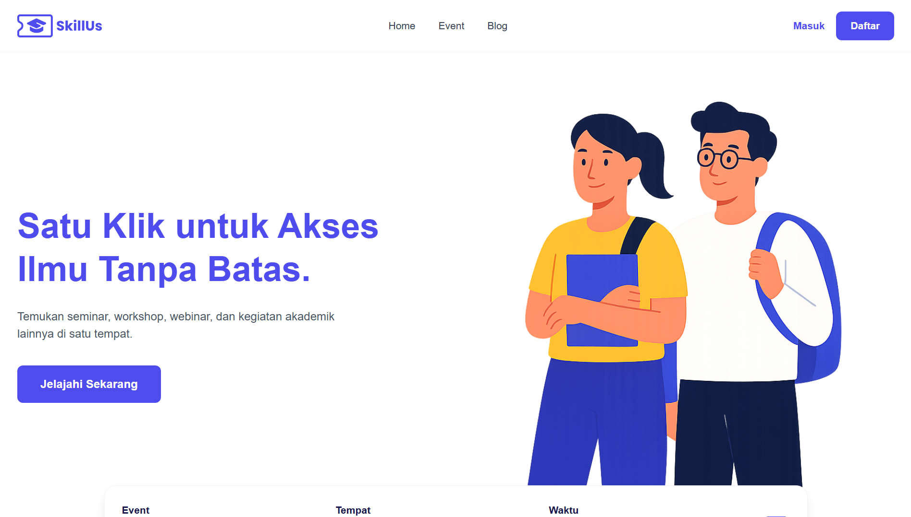
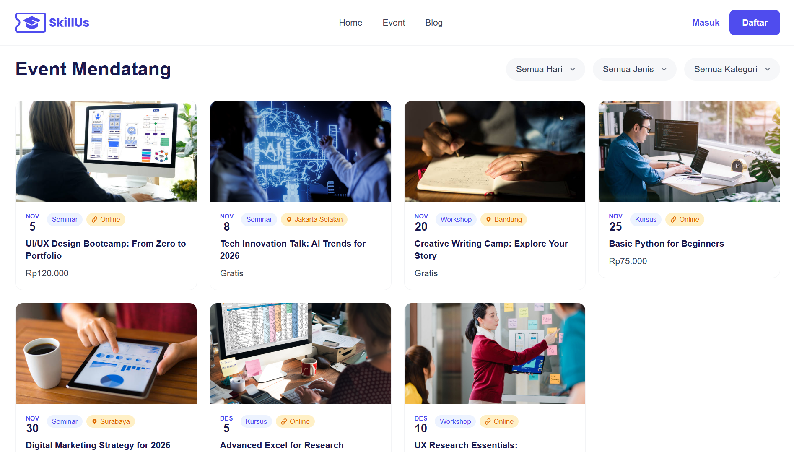
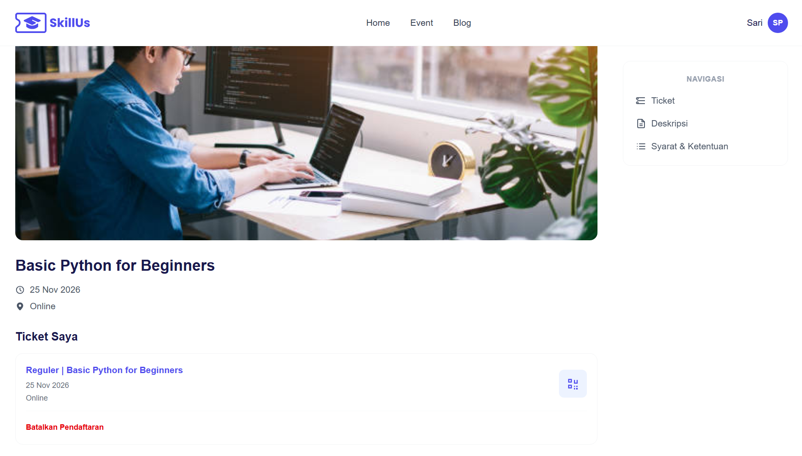
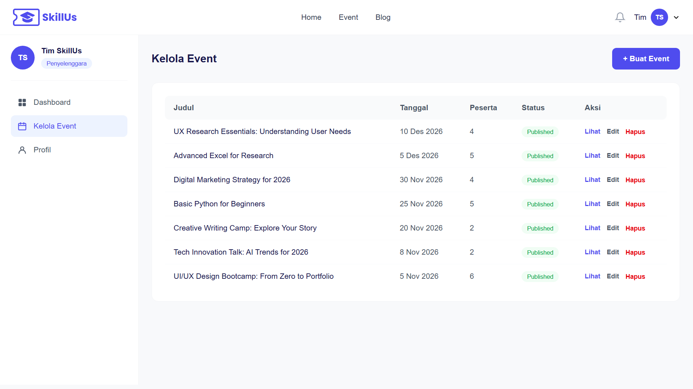
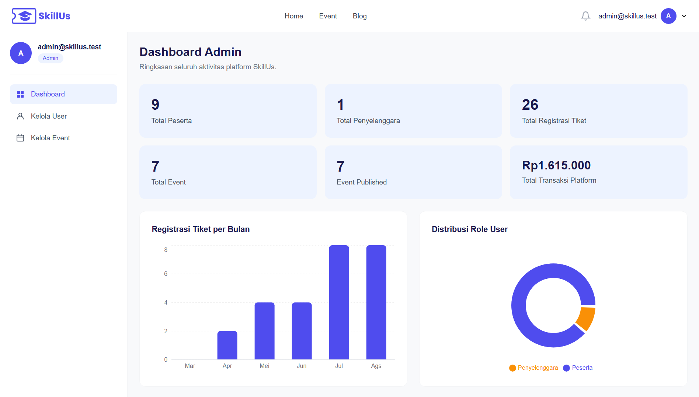

Event Ticketing Platform with Role-Based Dashboards for Peserta, Penyelenggara, and Admin
SkillUs is a campus event ticketing platform, rebuilt from scratch as a coursework project focused on shipping something actually production-grade, not just a working prototype.

Click the preview above to open skillus-project.vercel.app in a new tab.
What Is This Project?
SkillUs is a ticketing platform for campus seminars, workshops, and webinars. It started as a course assignment, but I ended up rebuilding it entirely from scratch after realizing the earlier version was more of a working demo than an actually wired system. Most flows looked complete on the surface but weren't connected to real data underneath.
The rebuild is structured around three separate role-based experiences (Peserta, Penyelenggara, and Admin), each with its own dashboard, permissions, and data scope, plus a complete ticket purchase flow from browsing to QR-code check-in.
Tech Stack
Derived from realizing the first version didn't hold up under real use.
The earlier implementation had register and login pages that looked finished, but role-based access wasn't actually enforced, so anyone could reach any dashboard just by typing the URL directly.
Ticket purchases weren't recorded anywhere. There was no real database write behind the "Beli Tiket" button, so there was no way to actually track who registered for what.
There was no real distinction between what a peserta, penyelenggara, and admin could see or do; it was effectively one interface pretending to be three.
What The System Does, by Role
For Peserta
Search by keyword, filter by category, location, and date across all published events.
A simulated checkout that actually writes a registration and transaction record, then generates a QR-code ticket.
Cancel a registration to free up quota for others, and review transaction history.
For Penyelenggara
Create, edit, and delete events, including poster uploads that get compressed client-side before upload.
See exactly who registered for each event, with their registration status.
Charts showing registrants per event and revenue, so performance isn't buried in a raw table.
For Admin
Publish, unpublish, or remove any event across all organizers, not just events tied to one account.
A list of every registered account and its role, across the whole platform.
Registration trends over time and role distribution, visualized as charts.
Debugging in Production, Not Just in Theory
This project's steepest learning curve happened after deployment, not before. A few issues only ever showed up in Vercel's production environment, never once in local development, which meant I had to actually trace each one back to its root cause instead of just patching around the symptom.
Each one turned out to be a different layer of the stack: Prisma accidentally bundled into edge middleware, an auth config that needed to explicitly trust its own host in production, and a hard platform-level payload limit that no amount of Next.js config could override. That last one got solved by compressing images client-side before they ever leave the browser.
A Closer Look




Reflection
Unlike most of my previous projects, which mostly worked from static mockups, this one pushed me through the entire lifecycle: schema design, auth, business logic, and eventually a live deployment that real conditions (not just a local npm run dev) could break in ways I hadn't predicted.
The debugging process reshaped how I think about "done." A feature working on localhost isn't the same as a feature working in production, and the gap between those two is where most of the real engineering actually happens.